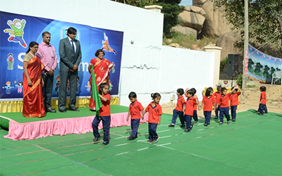
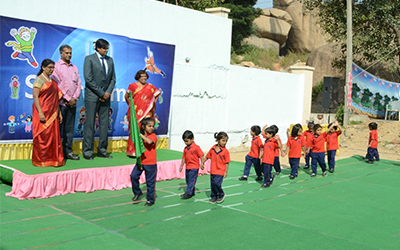
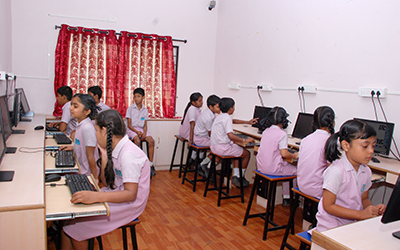
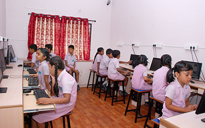

Established in the 2010, Sabhyatha The School was founded by S.P.N.V Lakshmi. Post graduate in Arts and Education, She holds more than two decades of experience as a Teacher and Head of Institution In reputed schools.She was meticulous in Mentoring many Teachers and Students in addition to counselling parents on various behavioral aspects of children.She is a Role model to many Students and Teachers. The mission of the school is to empower every child with futuristic outlook, without compromising on the traditional values. Our teaching methodology involves learning through play way methods that will be fun,entertainment and education to the child. Education is more than acquiring knowledge, it is a path to wisdom, and becoming wise is the ultimate goal of mankind. The power and influence of education is incomprehensible, imperishable and infinite. Every child is a seed which on receiving the right nourishment, care and guidance will grow into a giant tree of knowledge.
Our teachers are committed to educate and train students for their optimal overall growth and development. For the same reason there are regular checks maintained on their progress by organising talks and discussions with both the students and their parents. There is equal unbiased attention allotted to each child and constant up gradation in the teaching methods and techniques is adopted. The academic curriculum is set keeping in mind the psyche, grasping power and competence of children of same age groups.
Accreditations:
Our school is accredited to Government of Telangana.
Videos
CURRICULARACTIVITES
There are many curricular activities such as dance, games, yoga, music, karate and art and craft classes. Our school also inclued a picninc once in a year, Co Curricular Activities such as sports meet, expo, republic day, independence day, kids fair and many more
 

 
